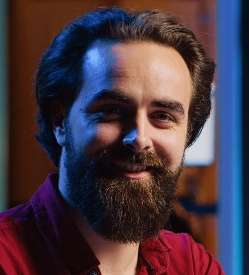
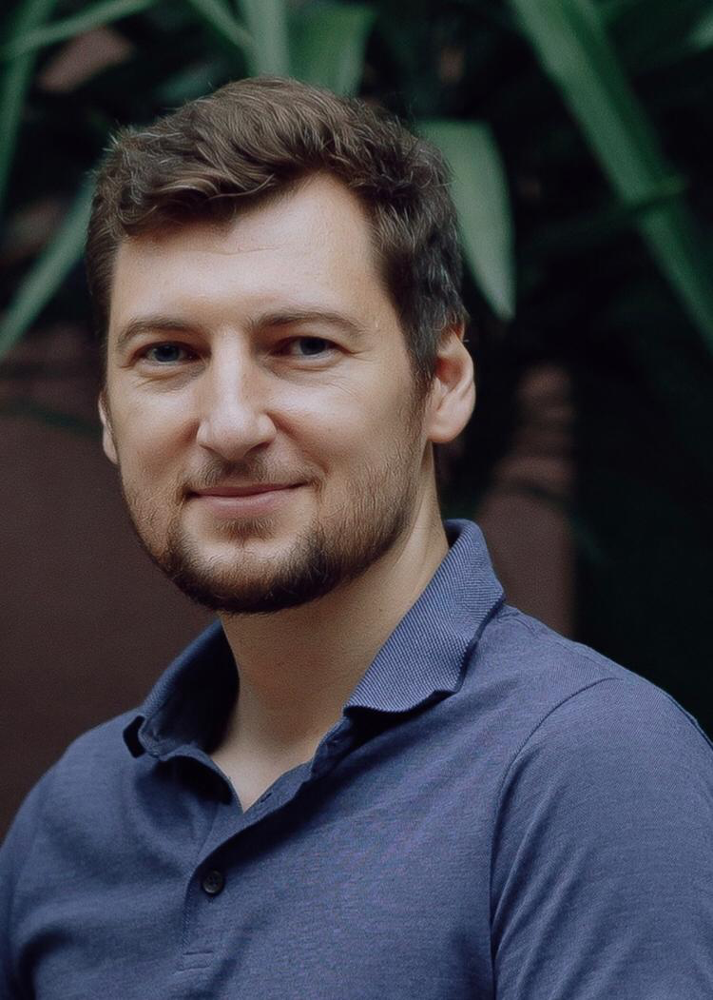
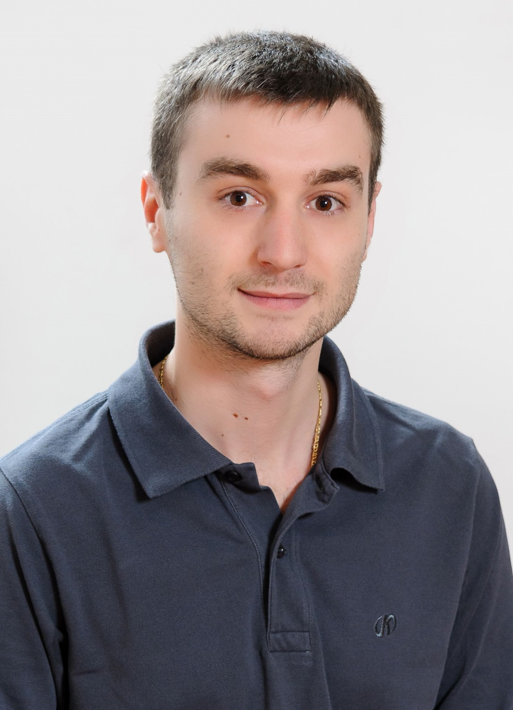
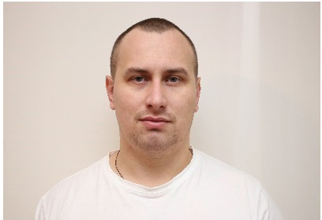

Emilian Oneșciuc
Povestea mea
- Decrețel din Bucovina
- De profesie inginer electronist
- Prin vocație constructor neobosit
- În copilărie și în adolescență am construit nenumărate machete funcționale și diverse alte
minunății,
utile, interesante, amuzante, sau toate la un loc
- În fabrică am proiectat aparate electronice pentru industria de apărare
- Ulterior am descoperit fascinanta lume a asigurărilor, în care am creat, aplicat și testat
concepte,
instrumente și strategii pentru forța de vânzări compozită
- Să transform un om, neîncrezător și cârcotaș, sau dimpotrivă, dornic să se asigure și exigent,
într-un
client cu două, trei, patru sau mai multe polițe de asigurare, polițe "adevărate", reprezintă pentru
mine unul din deliciile muncii pe care o desfășor
- Îmi amintesc cu satisfacție de clienți, unii dintre ei cunoscuți atunci, pe loc, care mi s-au
destăinuit
cam așa: "Am avut de gând să vă refuz și să încheiem discuția în 3 minute. Acum m-am pomenit că am
cumpărat 3 asigurări. Nu știu cum ați făcut, dar v-a ieșit"
- Sunt încântat că am reușit să transmit această pasiune arzătoare și coechipierilor din cele două
departamente de training pe care le-am format de la zero, în două companii de asigurări
internaționale,
compozite
- A rezultat o carte, publicată în trei ediții, apoi a doua, scrisă împreună cu un alt spirit
neastâmpărat, Simona
- BrainO este urmarea firească a celor 30 de ani de muncă tenace și creativă
Aportul meu la BrainO
- Ideea s-a născut într-o noapte, după ce în cursul zilei mă gândisem cum să transmit experiența mea
către
cât mai mulți oameni care intermediază asigurări, sub forma unui instrument util și atractiv, pe
care să
nu vrea să îl lase din mână
- Simona a aderat imediat, urmată de Răzvan, și astfel s-a format echipa
- Apoi, pe 8 slide-uri, am prezentat ideea în fața unui lider vizionar, pe care l-am cucerit și care
s-a
implicat în finanțarea proiectului
- A urmat crearea arhitecturii și a conținutului; pentru că mi-a plăcut enorm această activitate, îmi
este
greu să spun dacă în această perioadă am fost la muncă permanent sau în concediu permanent
- Am creat logo-ul, sloganul și alte elemente de identitate vizuală, care au luat forma actuală în
urma
colaborării cu un designer talentat
- M-a ajutat enorm faptul că, de-a lungul timpului, seară de seară, am consemnat ideile inovatoare pe
care
le-am aplicat și testat în practică, ziua, la clienți
- BrainO a apărut din dorința neostoită de a oferi, cât mai multor clienți, destulă asigurare
Simona Camelia Panaite
Povestea mea
- Sunt în asigurări din 1992
- Am activat în companii de asigurări internaționale, prima fiind o firmă de asigurări de viață, iar
celelalte compozite
- Sunt de formație economist, deși medicina a fost prima mea opțiune după terminarea liceului
- Nu am devenit medic uman, ci medic financiar, și găsirea de soluții pentru sănătatea financiară a
clienților a devenit pentru mine o pasiune
- Mai mult, educația în domeniul protecției personale, a familiei, a afacerii, s-a arătat a fi cel
puțin la fel de provocatoare ca și munca neurochirurgului, așa cum am visat să devin, în anii de
liceu
- În timp am constatat cât este de mare nevoia de educație în domeniul protecției și cât de multe
lucruri sunt de făcut în acest sens
- Pregătirea individuală și de grup a oamenilor cu care am lucrat și lucrez, cursurile pentru elevi de
liceu și studenți, prezentările în rândul oamenilor de afaceri, a asociațiilor profesionale, în
emisiuni dedicate, si multe altele, au fost acțiuni prin care am trezit interes, am stimulat
curiozități, toate cu scopul de a învăța oamenii cum să se protejeze
- Asta am făcut și fac în continuare în agențiile pe care le-am dezvoltat
- Așa am ajuns să lucrez cu Emilian la o carte și acum la un nou proiect
Aportul meu la BrainO
- Probabil pentru că și eu sunt decrețel și avem un istoric comun în asigurări de peste 25 de ani, eu
și Emilian avem aceeași viziune cu privire la importanța educației în asigurări
- De aceea, atunci când Emilian mi-a povestit despre noul proiect despre educație, am fost imediat de
acord să mă implic
- Crearea de conținut, partea financiar-contabilă și de proiecte noi de finanțare, sunt ariile în care
mă regăsesc în acest proiect
- Experiența mea în domeniul asigurărilor corporate se împletește perfect cu experiența în retail
compozit a lui Emilian
- Apoi, pentru că un proiect de educare și învățare pentru vânzarea de asigurări compozite necesită
tehnologie de ultimă generație, a devenit evident că avem nevoie de un partener capabil să o
dezvolte, acum și în viitor
- L-am cooptat în proiect pe Răzvan ca expert în inteligență artificială, împreună cu echipa lui de
IT-ști
- Evoluția proiectului ne va duce, pe fiecare, și în direcții noi (înregistrarea mărcii, site-ul,
strategia de marketing, noi automatizări și dezvoltare de servicii noi - cursuri personalizate, la
sală sau ca material de studiu, optimizare de procese / platforme de e-learning și multe altele)
- Este cert pentru mine că proiectul BrainO deschide perspective nemărginite la care toți trei
contribuim cu entuziasm și pasiune
Ștefan Răzvan Tecuceanu
Povestea mea
- Sunt originar din Brașov.
- Am absolvit matematica la Bergische University Wüppertal cu Summa cum laude
- De-a lungul anilor m-am afirmat ca fiind unul dintre pionierii în domeniul fascinant al inteligenței
artificiale
- O călătorie care a început, în 1998, cu o simplă poveste de dragoste pentru ecuațiile matematice,
s-a transformat în timp într-o pasiune intensă pentru AI
- Pe parcursul anilor am avut oportunitatea de a transforma teoria în aplicații practice lucrând
pentru companii mari din Europa, inclusiv doi coloși din asigurări, unde puterea și capacitatea
serverelor permiteau funcționarea acestei tehnologii avansate
- De-a lungul acestor două decenii și ceva m-am menținut în avangarda domeniului, considerându-mă un
ambasador neobosit al inteligenței artificiale
- Pentru mine, inteligența artificială este mai mult decât o simplă tehnologie; o văd ca pe un
instrument esențial, la fel de fundamental pentru progresul umanității ca și ciocanul pentru
construcție, creionul pentru transmiterea cunoștințelor, sau avionul pentru călătorii rapide
- AI nu este doar o unealtă, ci o extensie a capacității umane de a crea, de a inova și de a se adapta
într-o lume în continuă schimbare
- Am un sentiment profund de apartenență la acest tărâm al inovației și tehnologiei, un sentiment care
mă motivează să explorez și să împing limitele a ceea ce poate face această tehnologie uimitoare
- Când cineva mă întreabă cu ce mă ocup, îmi place să răspund cu un strop de mister și de entuziasm:
"Creez magie folosind inteligența artificială. Fac hârtiile să dispară, jucându-mă cu digitalizarea”
- Aceasta nu este doar o descriere a muncii mele, ci și o metaforă pentru modul în care văd rolul AI
în lumea modernă: un instrument care transformă vechiul în nou și complicatul în simplu
Aportul meu la BrainO
- De când am aflat despre conceptul central al BrainO, am recunoscut imediat spiritul inovator și
potențialul de creștere pe care îl oferă, atât în asigurări cât și în alte domenii, unde educația
este vitală
- Am identificat o idee care merită nu doar să fie explorată, dar și concretizată, revoluționând
astfel modul în care persoanele din domeniul asigurărilor își înțeleg activitatea și se dezvoltă
personal
- Chimia dintre mine, Simona și Emilian a fost evidentă din start, fiind toți trei pe aceeași lungime
de undă
- Am sporit valoarea educativă a conceptului prin adăugarea clienților virtuali
- Acești clienți, fiind replici complexe ale unor clienți reali, pe mai multe niveluri de interacțiune
și de dificultate, așteaptă să fie convinși de către utilizatori să cumpere asigurări, pentru a
deține, cum ar spune Emilian, destulă asigurare
- Esența inovației noastre conține o promisiune: să depășim simpla integrare a tehnologiei de ultimă
generație în proiectele noastre
Colaboratori

Ciobaniuc Andreea Bianca
UX/UI & Graphic designer

Chifu Amatis
Multimedia editor

Valentin Iacub
Developer

Corneliu Tirbu
Developer

Ivan Dovbenco
Developer